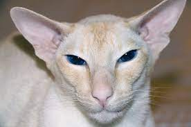

|  |
| Colorpoint Shorthair |
BEHAVIOR
Colorpoint Shorthair cats are outgoing, friendly and affectionate, tending to follow their favorite people all around the house. They are typically very vocal, with a loud and distinctive meow, which they use to “talk” to anyone who will listen. These sweet snugglers gravitate toward warm laps and fuzzy blankets, especially in the cold winter months.
GROOMING
The Colorpoint Shorthair’s coat is exceedingly easy to care for. Weekly brushing with a rubber curry brush to remove loose hair and the occasional bath is just about all this breed needs. Shedding is fairly low and they are naturally very clean cats. Keep your Colorpoint Shorthair cat’s nails trimmed short and periodically look inside the ears for dirt and redness. If you see a little debris in the ears, use a gentle pet ear cleanser to clean the ears with a cotton ball and (never stick anything like a cotton swab into a cat’s ear). If the ears look inflamed or excessively dirty, or if your Colorpoint Shorthair is shaking his head or scratching his ears, schedule a checkup with your veterinarian.
HEALTH PROBLEMS
All cats can develop health issues throughout their lives, but as with all pedigreed cats, the Colorpoint Shorthair has some known congenital issues in its background. The Colorpoint Shorthair is prone to the same conditions as its close cousin the Siamese, including crossed eyes and other eye issues, a liver disorder called amyloidosis, dental problems, breathing issues like asthma and congenital heart defects. Reputable breeders test their adult cats for health issue and avoid breeding affected cats. Most reputable breeders also usually offer a health guarantee of some kind.
NUTRITION
Colorpoint Shorthairs should be long and lean. Keeping your Colorpoint Shorthair at an ideal weight can prevent certain health issues like diabetes, heart disease and arthritis, which can be compounded by excess weight. Feed your Colorpoint Shorthair measured amounts of cat food at regular times (twice a day for adult cats). Avoid free feeding (leaving food out all day), which can cause continuous snacking, contributing to an overweight cat. Ask your veterinarian or breeder for advice about the best food to feed your Colorpoint Shorthair cat.